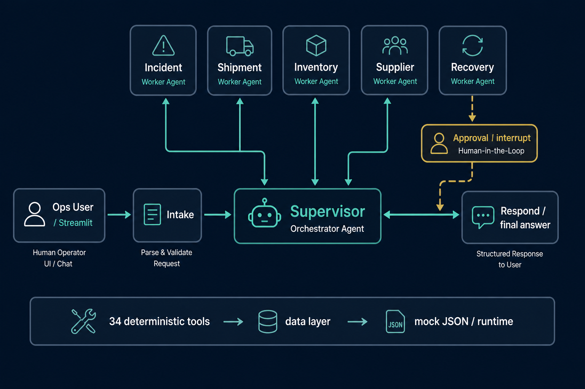

An AI-powered operational assistant for supply chain disruption management.
31 July 2026 · Capstone MVP · Fictional client, simulated data
Team
Andriy Franko · Mykhailo Chaus · Pavlo Lohvinov
Context
The problem it solves
Today at NovaRetail
150 stores · 8 warehouses · 300+ suppliers · ~5,000 shipments a day. When a shipment is late, stock runs short, or a supplier fails, ops jump across separate portals and coordinate recovery by hand.
Purpose of the assistant
One place to ask in plain English — understand the incident, route to the right supply-chain function, pull live facts, and propose a recovery plan with a human still in control of writes.
What ops can do
Track shipments and quantify delay impact
Check stock, shortages, and transfer options
Find and compare alternative suppliers
Raise incidents, escalate, and plan recovery
What it opens for NovaRetail
Faster disruption response across teams
Unified visibility instead of portal-hopping
AI-assisted recovery with approval gates
Less manual coordination on every incident
Architecture · Mykhailo Chaus
Architecture — multi-agent LangGraph over a deterministic tool layer
Every failure degrades deterministically — regex intake, fallback routing table, retry on 429/503
Multi-agent design
Supervisor is the only router; every worker reports back to it
Workers get a briefing (intake summary + other agents' findings), never the raw conversation
Recovery has no write tools — the human gate is structural, not a prompt rule
LangSmith traces every node, model and tool call
supervisor (router)human-in-the-loop gateagent / componentNumbers come from tools, not model prose
LangGraph · StateGraph · Mykhailo Chaus
The multi-agent workflow — supervisor routes, workers report back
supervisor routing (conditional)workers return to supervisorHITL: propose → interrupt() → actions.pyhop cap forces respond
Multi-agent system
Agent map

Yellow Approval is human-in-the-loop: Recovery only proposes writes — nothing lands until an operator Approves.
Numbers come from the tool layer, not from the model’s prose.
Live demo
Streamlit walkthrough
Live demo
Presented by Andriy Franko
Switch to the Streamlit ops console — ask a real question, show the workflow trace, and (if a write is proposed) the Approve / Reject gate.
Postgres checkpointer across restarts and replicas
Planned
Proactive monitor
Watch routes & stock; raise incidents before ops ask
Planned
Notifications
Email / Teams as approved write actions
Planned
RBAC
Who may approve which write actions
Planned
Quality: ~370 hermetic pytest tests + smoke test — no API key required.
Recommendation: the structural rails — supervisor loop, propose-only recovery, deterministic tools — are ready to grow onto real APIs without rewriting the agents.
Close
Questions?
Happy to walk through any agent, tool, or design decision.